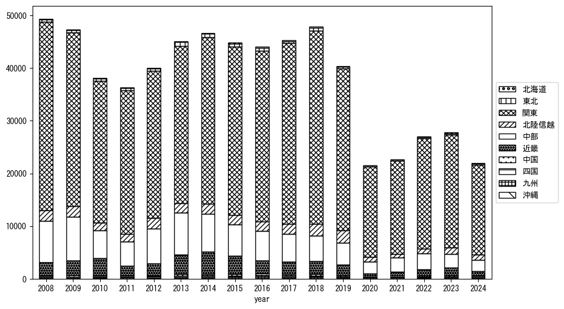

-
トップ
-
山梨県
山梨県
１．延べ宿泊者（総数）の推移
時系列グラフ
 図１：山梨県内の従業員数100人以上の宿泊施設での延べ宿泊者数（国外、居住地不詳を含む総数）。
図１：山梨県内の従業員数100人以上の宿泊施設での延べ宿泊者数（国外、居住地不詳を含む総数）。
基本統計量
表１：従業員数100人以上の宿泊施設での延べ宿泊者の総数（国外、および居住地不詳を含む）に関する基本統計量。単位は人。平均は１か月あたりの平均値を表す。図１に対応。
| 2008年 |
58,618 |
8,588 |
45,418 (12月) |
74,334 (8月) |
| 2009年 |
64,448 |
15,011 |
47,321 (2月) |
104,922 (8月) |
| 2010年 |
53,670 |
10,379 |
40,628 (2月) |
79,228 (8月) |
| 2011年 |
46,473 |
11,600 |
26,576 (3月) |
65,843 (8月) |
| 2012年 |
51,316 |
11,057 |
36,635 (2月) |
78,846 (8月) |
| 2013年 |
48,926 |
8,304 |
36,097 (2月) |
66,884 (8月) |
| 2014年 |
50,617 |
9,543 |
30,098 (2月) |
66,765 (8月) |
| 2015年 |
54,717 |
10,876 |
37,867 (1月) |
74,971 (8月) |
| 2016年 |
53,886 |
14,073 |
40,488 (1月) |
91,991 (8月) |
| 2017年 |
61,693 |
14,487 |
47,789 (2月) |
99,636 (8月) |
| 2018年 |
60,318 |
11,510 |
44,786 (2月) |
80,790 (8月) |
| 2019年 |
57,491 |
14,377 |
42,343 (1月) |
93,949 (8月) |
| 2020年 |
28,511 |
17,299 |
0 (5月) |
50,279 (11月) |
| 2021年 |
26,981 |
14,539 |
4,969 (2月) |
53,735 (8月) |
| 2022年 |
37,912 |
15,518 |
8,244 (2月) |
64,867 (8月) |
| 2023年 |
51,624 |
8,179 |
37,032 (1月) |
60,543 (11月) |
２．宿泊者数の重心（年平均の推移）
図２：山梨県内の従業員数100人以上の宿泊施設での宿泊者数（国外、居住地不詳を除く）の重心（年平均の推移）。延べ宿泊者数が0であるため、2020年5月の重心は欠損。
全画面表示
重心の前年平均からの移動距離と方位、および緯度・経度
表２：重心の前年平均からの移動距離と方位、および緯度・経度。図２に対応。
| 2008年 |
— |
— |
35.6269 |
138.8451 |
| 2009年 |
西 |
10.0km |
35.6124 |
138.7360 |
| 2010年 |
東南東 |
0.4km |
35.6106 |
138.7403 |
| 2011年 |
東北東 |
16.5km |
35.6567 |
138.9134 |
| 2012年 |
西 |
13.2km |
35.6498 |
138.7679 |
| 2013年 |
西南西 |
15.8km |
35.5997 |
138.6046 |
| 2014年 |
東北東 |
4.0km |
35.6067 |
138.6475 |
| 2015年 |
東北東 |
10.4km |
35.6260 |
138.7598 |
| 2016年 |
東北東 |
8.6km |
35.6433 |
138.8523 |
| 2017年 |
東北東 |
8.6km |
35.6623 |
138.9448 |
| 2018年 |
東北東 |
3.4km |
35.6702 |
138.9814 |
| 2019年 |
南西 |
2.7km |
35.6534 |
138.9600 |
| 2020年 |
東南東 |
11.1km |
35.6209 |
139.0759 |
| 2021年 |
西北西 |
6.6km |
35.6349 |
139.0048 |
| 2022年 |
南南東 |
1.2km |
35.6247 |
139.0093 |
| 2023年 |
北北西 |
5.2km |
35.6669 |
138.9852 |
運輸局別延べ宿泊者数
時系列（年平均）

図３：山梨県内の従業員数100人以上の宿泊施設での１か月あたり平均宿泊者数（国外、居住地不詳を除く）の運輸局別内訳。
寄与度（前年からの変化率に対する）
 図４：山梨県内の従業員数100人以上の宿泊施設での運輸局別宿泊者数（国外、居住地不詳を除く）から求めた寄与度。
図４：山梨県内の従業員数100人以上の宿泊施設での運輸局別宿泊者数（国外、居住地不詳を除く）から求めた寄与度。
３．宿泊者数の重心（月別）
図５：山梨県内の従業員数100人以上の宿泊施設での宿泊者数（国外、居住地不詳を除く）の重心（月別）。観測期間は2008年1月から2023年12月まで。延べ宿泊者数が0であるため、2020年5月の重心は欠損。
全画面表示
全期間（2008年1月～2023年12月）の平均と月別平均の比較
表３：全期間の平均から月別平均までの移動距離と方位、および緯度・経度。図５に対応。
| 全期間 |
— |
— |
35.6354 |
138.8632 |
| 1月 |
東北東 |
6.3km |
35.6470 |
138.9315 |
| 2月 |
北西 |
1.3km |
35.6435 |
138.8536 |
| 3月 |
西 |
9.6km |
35.6296 |
138.7577 |
| 4月 |
西北西 |
4.0km |
35.6457 |
138.8214 |
| 5月 |
西南西 |
4.4km |
35.6251 |
138.8165 |
| 6月 |
北西 |
0.9km |
35.6418 |
138.8570 |
| 7月 |
南南東 |
3.2km |
35.6081 |
138.8741 |
| 8月 |
東南東 |
13.1km |
35.6040 |
139.0029 |
| 9月 |
東北東 |
2.6km |
35.6422 |
138.8911 |
| 10月 |
北西 |
5.5km |
35.6747 |
138.8255 |
| 11月 |
西 |
5.9km |
35.6450 |
138.7987 |
| 12月 |
東南東 |
5.9km |
35.6175 |
138.9251 |
運輸局別延べ宿泊者数
月別平均（2008年1月～2023年12月）
図６：山梨県内の従業員数100人以上の宿泊施設での宿泊者数（国外、居住地不詳を除く）の運輸局別内訳（月別）。
寄与度（全期間の平均から月別平均への変化率に対する）
 図７：山梨県内の従業員数100人以上の宿泊施設での運輸局別宿泊者数（国外、居住地不詳を除く）から求めた寄与度（月別）。
図７：山梨県内の従業員数100人以上の宿泊施設での運輸局別宿泊者数（国外、居住地不詳を除く）から求めた寄与度（月別）。
４．データのダウンロード
出典：観光庁「宿泊旅行統計調査」に収録された「施設所在地別、居住地別延べ宿泊者数（従業員数100人以上の施設）」
国土地理院「白地図（地理院タイル）」（図２と図５）